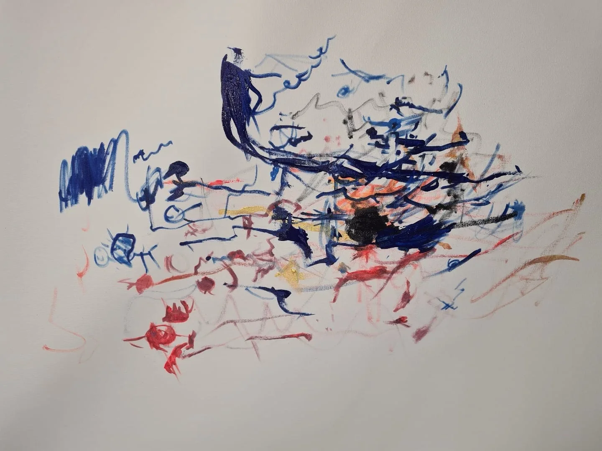

Desde 2012
Equipe Ponte
Psicanálise e
trabalho em grupo.
Crianças, adolescentes e jovens adultos.
Novas formas de
expressão e relação com o mundo.
A Ponte
Uma proposta clínica.
Um trabalho em grupo.
Desde 2012, a Equipe Ponte pesquisa e realiza uma proposta clínica de tratamento através da psicanálise e do trabalho em grupo direcionado a crianças, adolencentes e jovens adultos que apresentam sofrimento e/ou significativos impasses no laço social, nas relações consigo e com os outros. Muitas delas possuem diagnósticos que se enquadram no que a linguagem médica define como deficiências (de aprendizagem, deficit cognitivo, etc), síndromes (down, prader willi, rubinstein-taybi, etc), quadros neurológicos (epilepsia, paralisia cerebral, etc) ou diagnósticos psiquiátricos (transtorno do espectro autista, transtorno obsessivo-compulsivo, transtorno bipolar, TDAH, etc), e outras um acentuado sofrimento e dificuldade nos laços sem que possuam qualquer diagnóstico fechado; mas, de modo geral, possuem uma forma muito particular de se relacionarem com a vida.
A Ponte oferece um trabalho a partir do dispositivo grupal que se utiliza, da teoria clínica psicanalítica, bem como de diferentes oficinas terapêuticas e artísticas como instrumentos que promovam novas formas de expressão e relação com o mundo.

O grupo
Conheça o grupoO trabalho com o grupo realizado pela equipe tem uma história e trajetória embasada na experiência clínica com casos graves, através dos trabalhos de análise, acompanhamento terapêutico e o dispositivo grupal, que pode ser melhor compreendida ao acessar o link o grupo.
Todas as oficinas da equipe são ofertas para que cada um possa se investigar e se descobrir em seus gostos, interesses e aptidões, de modo a trazer à tona seus gestos espontâneos e particulares, para além de suas dificuldades e traços limitantes de qualquer diagnóstico que o acompanhe. Com isso, visa tratar os impasses subjetivos e expandir as possibilidades de se colocar junto ao outro e no mundo.
O espaço de tratamento em saúde mental oferecido, fundamentado pela teoria psicanalítica, se caracteriza como um trabalho de subjetivação a partir da promoção de diferentes estímulos que cada oficina cuidadosamente estudada e elaborada para isso oferece. O objetivo é fornecer ambiente e intervenção que auxiliem cada participante a descobrir e trazer o que é mais particular de si em suas expressões e que, por conseguinte, avanços psíquicos em suas formas de se expressar e se relacionar de modo geral sejam conquistados.
As oficinas não visam o ensinamento das ferramentas artísticas no sentido de uma aprendizagem pedagógica e a construção de repertório artístico rigoroso e/ou profissionalizante, ainda que esse possa ser um efeito secundário.
Para saber um pouco mais de cada oficina e de como cada uma delas pode favorecer o tratamento clínico em questão, você pode acessar o link oficinas.
Conheça a Ponte
Pesquisa,
clínica e encontros.
A fundamentação teórica para a construção desse trabalho ao redor do público-alvo em questão, das oficinas, assim como outros textos e publicações da equipe e seus membros podem ser encontrados no link textos e publicações.
Para conhecer melhor os membros da equipe é só acessar o link a equipe.
Se você tem interesse em falar conosco, acesse o link contato para nos enviar um e-mail ou entre em contato por meio dos telefones e redes sociais.
Atenciosamente,
A Equipe